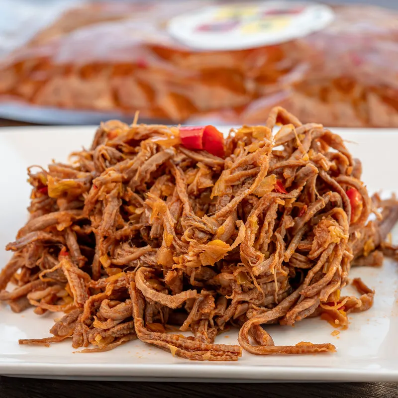
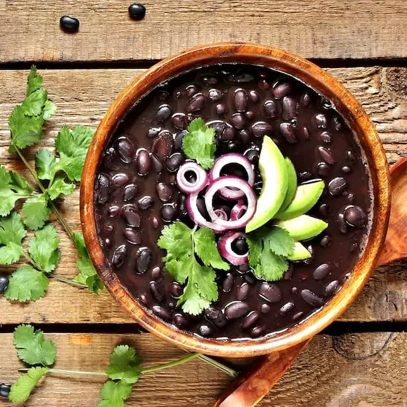
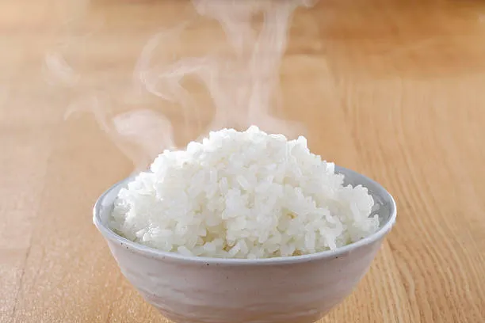
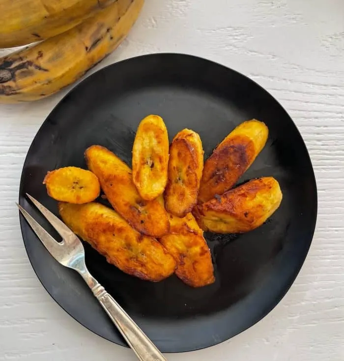

Pabellon
Inicio
Para preparar un Pabellón Criollo, el plato nacional de Venezuela, necesitarás los ingredientes para sus cuatro componentes principales. Aquí tienes la lista detallada:
1. Para la Carne Mechada:
- Falda de res (o algún corte que se pueda deshebrar fácilmente).
- Vegetales para el sofrito: Cebolla, pimentón dulce (rojo y verde), ají dulce (fundamental para el sabor venezolano), ajo y cebollín.
- Condimentos: Sal, pimienta, comino y un toque de adobo.
- Color: Pasta de tomate o un poco de onoto (achiote) para dar color al guiso.

2. Para las Caraotas Negras (Frijoles):
- Caraotas negras (frijoles negros) secas.
- Aliños: Cebolla, ajo y ají dulce.
- Especias: Sal y una pizca de comino.
- Opcional: Azúcar o papelón (muchas personas las prefieren con un toque dulce).

3. Para el Arroz Blanco:
- Arroz blanco de grano largo.
- Agua.
- Sal.
- Ajo o cebolla (opcional, para sofreír el arroz antes de cocerlo).

4. Para las Tajadas:
- Plátanos maduros (deben estar bien amarillos con manchas negras para que queden dulces).
- Aceite vegetal para freír.

Ingredientes adicionales (Opcional):
- Queso blanco duro rallado (para espolvorear sobre las caraotas).
- Huevo frito (si se desea transformar en un "Pabellón a caballo").